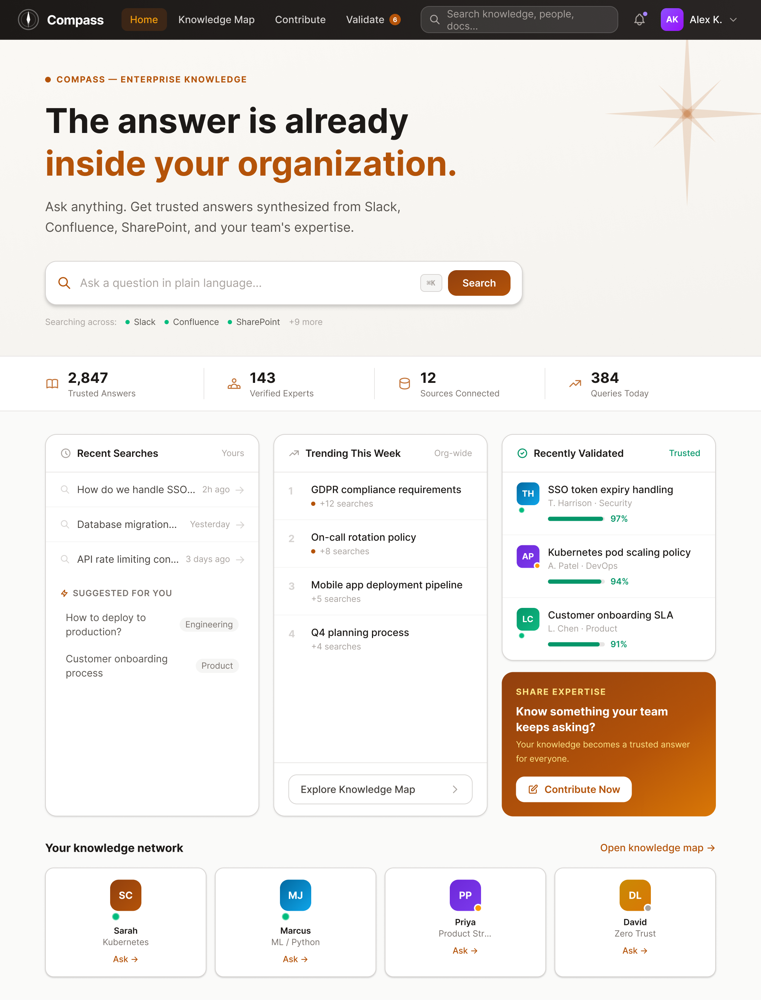
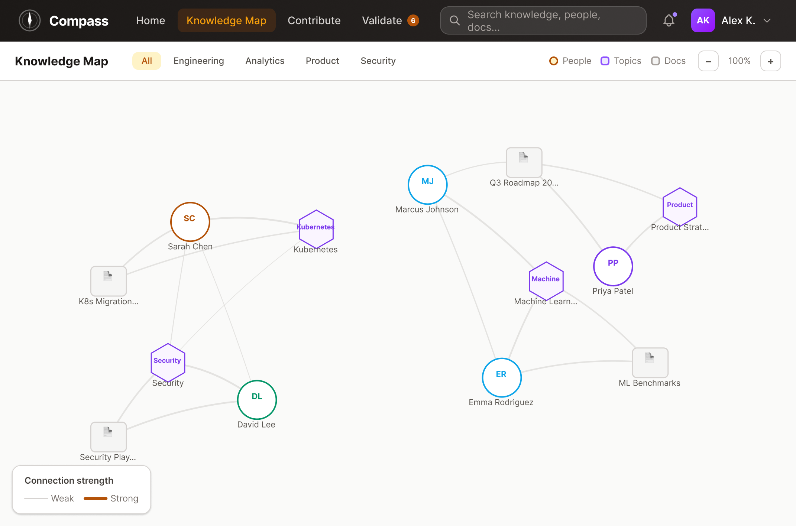
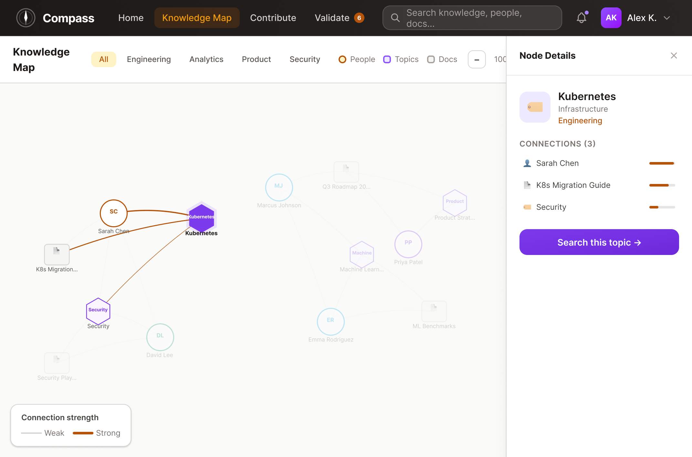
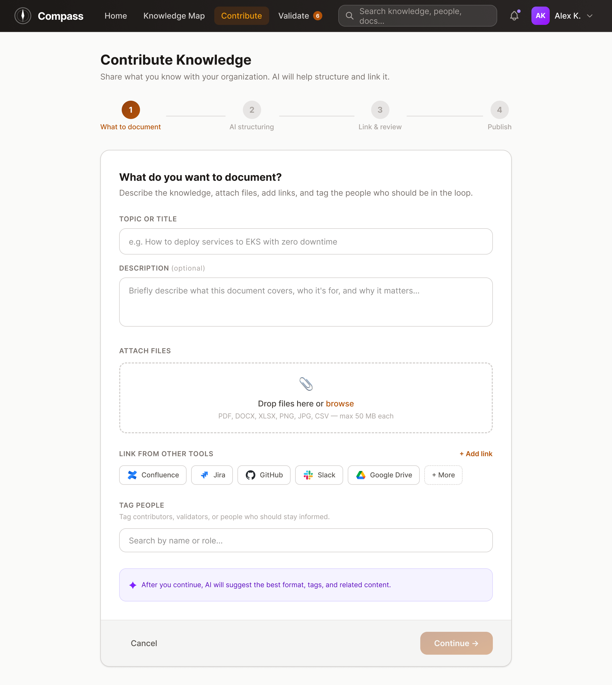
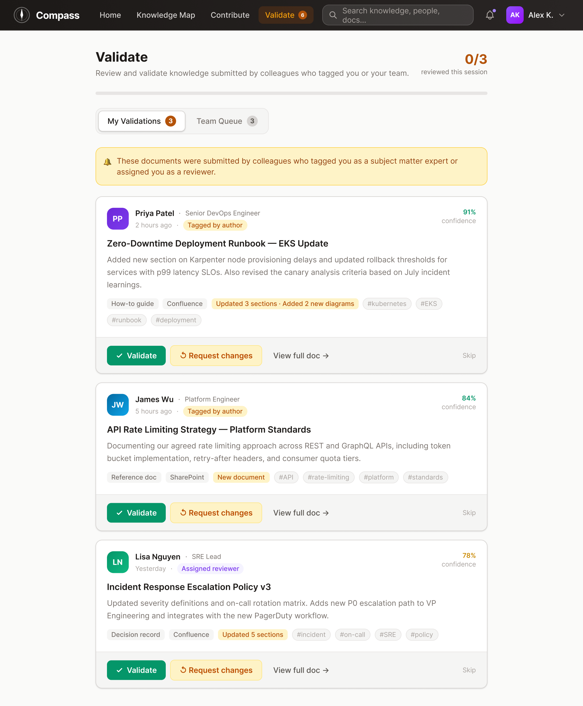

<title>Compass</title>
<link rel="preconnect" href="https://fonts.googleapis.com">
<link rel="preconnect" href="https://fonts.gstatic.com" crossorigin>
<link href="https://fonts.googleapis.com/css2?family=Public+Sans:wght@400;500;600;700;800&display=swap" rel="stylesheet">
<style>
  /* Layout concept: a single product-case-study column in the pattern of a real
     portfolio reference (meta strip, three-card summary, a soft hero panel, an
     inline diagnostic chain, and two full-bleed color blocks for pacing), built
     in one sans family so hierarchy comes from weight and size, not a font pair.
     Ink and copper carry over from the product itself. */
  :root {
    --bg: #F7F6F3;
    --surface: #FFFFFF;
    --ink: #1C1814;
    --ink-soft: #6B6154;
    --ink-faint: #A69C8C;
    --rule: #E3DED3;
    --accent: #A9531D;
    --accent-soft: #F2E1CE;
    --rust-bg: #F4E1D8;
    --rust-fg: #8C3B1E;
    --status-bg: #EAE7DF;
    --status-fg: #6B6154;
    --dark-bg: #211B14;
    --dark-ink: #F2ECE2;
    --dark-ink-soft: #C6BAA6;
    color-scheme: light;
  }
  @media (prefers-color-scheme: dark) {
    :root:not([data-theme="light"]) {
      --bg: #15120E;
      --surface: #1E1A15;
      --ink: #F1ECE3;
      --ink-soft: #C3B8A6;
      --ink-faint: #857A69;
      --rule: #322C24;
      --accent: #E08A3E;
      --accent-soft: #3A2A1A;
      --rust-bg: #33221A;
      --rust-fg: #E08A5E;
      --status-bg: #2A251D;
      --status-fg: #C3B8A6;
      --dark-bg: #0E0B08;
      --dark-ink: #F2ECE2;
      --dark-ink-soft: #B7AB97;
      color-scheme: dark;
    }
  }
  :root[data-theme="dark"] {
    --bg: #15120E;
    --surface: #1E1A15;
    --ink: #F1ECE3;
    --ink-soft: #C3B8A6;
    --ink-faint: #857A69;
    --rule: #322C24;
    --accent: #E08A3E;
    --accent-soft: #3A2A1A;
    --rust-bg: #33221A;
    --rust-fg: #E08A5E;
    --status-bg: #2A251D;
    --status-fg: #C3B8A6;
    --dark-bg: #0E0B08;
    --dark-ink: #F2ECE2;
    --dark-ink-soft: #B7AB97;
    color-scheme: dark;
  }

  * { box-sizing: border-box; }
  html, body { margin: 0; padding: 0; }
  body {
    background: var(--bg);
    color: var(--ink);
    font-family: 'Public Sans', -apple-system, 'Segoe UI', sans-serif;
    font-size: 17px;
    line-height: 1.62;
    -webkit-font-smoothing: antialiased;
  }
  ::selection { background: var(--accent-soft); color: var(--ink); }
  h1, h2, h3 { font-family: inherit; line-height: 1.15; text-wrap: balance; margin: 0; }

  main {
    max-width: 760px;
    margin: 0 auto;
    padding: 56px 24px 0;
    padding-top: calc(56px + env(safe-area-inset-top, 0px));
  }
  .full-bleed { margin-inline: calc(50% - 50vw); }

  .mark {
    display: flex;
    align-items: center;
    gap: 8px;
    font-size: 14.5px;
    font-weight: 600;
    color: var(--ink-soft);
    margin-bottom: 40px;
  }

  h1.title { font-size: clamp(32px, 6.5vw, 46px); font-weight: 700; letter-spacing: -0.01em; }
  .thesis {
    font-size: clamp(17px, 2.6vw, 19.5px);
    color: var(--ink-soft);
    margin: 16px 0 0;
    max-width: 560px;
    line-height: 1.5;
  }

  .meta-strip {
    margin-top: 36px;
    padding-top: 24px;
    border-top: 1px solid var(--rule);
    display: grid;
    grid-template-columns: repeat(4, 1fr);
    gap: 18px;
  }
  .meta-item .label {
    font-size: 11px;
    letter-spacing: 0.07em;
    text-transform: uppercase;
    color: var(--ink-faint);
    font-weight: 600;
    margin-bottom: 7px;
  }
  .meta-item .value { font-size: 14.5px; font-weight: 500; }

  section { margin-top: 60px; }
  h2.heading { font-size: clamp(23px, 4.5vw, 28px); font-weight: 700; margin-bottom: 20px; letter-spacing: -0.005em; }
  h3.subheading { font-size: 19px; font-weight: 700; margin: 0 0 8px; }
  p { margin: 0 0 18px; }
  p:last-child { margin-bottom: 0; }

  .summary-grid {
    display: grid;
    grid-template-columns: 1fr;
    gap: 14px;
  }
  .summary-card { border-radius: 10px; padding: 22px 22px 20px; }
  .summary-card.c-problem { background: var(--rust-bg); }
  .summary-card.c-approach { background: var(--accent-soft); }
  .summary-card.c-status { background: var(--status-bg); }
  .summary-label {
    font-size: 11.5px;
    letter-spacing: 0.06em;
    text-transform: uppercase;
    font-weight: 700;
    margin-bottom: 12px;
  }
  .c-problem .summary-label { color: var(--rust-fg); }
  .c-approach .summary-label { color: var(--accent); }
  .c-status .summary-label { color: var(--status-fg); }
  .summary-card ol { margin: 0; padding-left: 19px; }
  .summary-card li { margin-bottom: 8px; font-size: 15px; line-height: 1.5; color: var(--ink); }
  .summary-card li:last-child { margin-bottom: 0; }

  .hero-panel {
    margin-top: 40px;
    padding: clamp(16px, 4vw, 36px);
    border-radius: 14px;
    background: linear-gradient(160deg, var(--accent-soft), var(--bg) 65%);
  }
  .hero-panel .plate { margin: 0; }

  .plate {
    margin-top: 22px;
    border-radius: 8px;
    overflow: hidden;
    border: 1px solid var(--rule);
    box-shadow: 0 1px 2px rgba(28,24,20,0.04), 0 12px 32px rgba(28,24,20,0.08);
    background: var(--surface);
  }
  .plate img { display: block; width: 100%; height: auto; }
  .caption { font-size: 14px; color: var(--ink-faint); margin-top: 9px; line-height: 1.5; }

  .callout {
    margin: 26px 0;
    background: var(--accent-soft);
    border-radius: 10px;
    padding: 22px 24px;
  }
  .callout .callout-label {
    font-size: 11.5px;
    letter-spacing: 0.06em;
    text-transform: uppercase;
    font-weight: 700;
    color: var(--accent);
    margin-bottom: 10px;
  }
  .callout p { color: var(--ink); margin: 0; font-size: 16px; }

  .calc-card {
    background: var(--surface);
    border: 1px solid var(--rule);
    border-radius: 8px;
    padding: 22px 24px;
    margin: 26px 0;
  }
  .calc-label { font-size: 13.5px; color: var(--ink-faint); margin-bottom: 14px; }
  .calc-row {
    font-size: 14.5px;
    display: flex;
    justify-content: space-between;
    padding: 6px 0;
    color: var(--ink-soft);
    font-variant-numeric: tabular-nums;
  }
  .calc-row.total { border-top: 1px solid var(--rule); margin-top: 5px; padding-top: 13px; color: var(--ink); font-weight: 600; }

  .why-chain {
    margin-top: 28px;
    display: flex;
    flex-direction: column;
    align-items: stretch;
  }
  .why-step {
    background: var(--surface);
    border: 1px solid var(--rule);
    border-radius: 10px;
    padding: 20px 22px;
    position: relative;
    display: flex;
    flex-direction: column;
    justify-content: center;
  }
  .why-step .step-label {
    font-size: 11px;
    letter-spacing: 0.06em;
    text-transform: uppercase;
    font-weight: 700;
    color: var(--accent);
    margin-bottom: 8px;
  }
  .why-step p { margin: 0; font-size: 15.5px; color: var(--ink); line-height: 1.45; max-width: 54ch; }
  .why-arrow {
    display: flex;
    align-items: center;
    justify-content: center;
    height: 34px;
    color: var(--ink-faint);
  }
  .why-arrow svg { display: block; }
  .why-step.root { background: var(--rust-bg); border-color: transparent; }
  .why-step.root .step-label { color: var(--rust-fg); }

  @media (min-width: 560px) {
    .why-step { padding: 24px 28px; }
    .why-step p { font-size: 16px; }
  }

  .divider-block {
    background: var(--ink);
    color: var(--bg);
    padding: 56px 24px;
    text-align: center;
  }
  :root[data-theme="dark"] .divider-block, .divider-block { background: var(--ink); }
  .divider-block p {
    max-width: 480px;
    margin: 0 auto;
    font-size: clamp(21px, 4.5vw, 27px);
    font-weight: 600;
    line-height: 1.35;
    color: var(--bg);
  }

  .beat { margin-bottom: 26px; }
  .beat:last-child { margin-bottom: 0; }
  .beat p { color: var(--ink-soft); }

  .competitor-list { margin-top: 20px; }
  .competitor { padding: 18px 0; border-top: 1px solid var(--rule); }
  .competitor:last-child { border-bottom: 1px solid var(--rule); }
  .competitor-name { font-size: 16.5px; font-weight: 700; margin-bottom: 5px; }
  .competitor p { margin: 0; color: var(--ink-soft); font-size: 15.5px; }

  .screen { margin-top: 48px; }
  .screen:first-of-type { margin-top: 28px; }
  .map-sequence { margin-top: 22px; display: grid; gap: 28px; }
  .map-sequence figure { margin: 0; }
  .map-sequence .plate { margin-top: 0; }

  .stats-block {
    background: var(--dark-bg);
    color: var(--dark-ink);
    border-radius: 14px;
    padding: clamp(24px, 5vw, 40px);
    margin-top: 24px;
  }
  .stats-block .stats-note { font-size: 13px; color: var(--dark-ink-soft); margin-bottom: 22px; }
  .stats-grid { display: grid; grid-template-columns: 1fr 1fr; gap: 22px; }
  .stat .stat-num { font-size: clamp(24px, 6vw, 32px); font-weight: 800; color: var(--dark-ink); }
  .stat .stat-desc { font-size: 13.5px; color: var(--dark-ink-soft); margin-top: 5px; line-height: 1.4; }

  .questions { margin-top: 22px; }
  .question { padding: 18px 0; border-top: 1px solid var(--rule); color: var(--ink-soft); font-size: 16.5px; }
  .question:last-child { border-bottom: 1px solid var(--rule); }

  .closing-quote {
    margin-top: 64px;
    padding-top: 44px;
    border-top: 1px solid var(--rule);
  }
  .closing-quote p {
    font-size: clamp(22px, 5vw, 30px);
    font-weight: 600;
    color: var(--ink-faint);
    line-height: 1.4;
    margin: 0;
  }

  footer {
    margin-top: 36px;
    padding: 24px 0 56px;
    padding-bottom: calc(56px + env(safe-area-inset-bottom, 0px));
    border-top: 1px solid var(--rule);
  }
  footer .name { font-size: 16px; font-weight: 700; }
  footer .role { font-size: 14px; color: var(--ink-faint); margin-top: 3px; }

  .reveal { opacity: 1; transform: none; }
  @media (prefers-reduced-motion: no-preference) {
    .reveal { opacity: 0; transform: translateY(12px); transition: opacity 0.6s ease, transform 0.6s ease; }
    .reveal.in { opacity: 1; transform: none; }
  }

  @media (min-width: 640px) {
    .summary-grid { grid-template-columns: repeat(3, 1fr); }
    .stats-grid { grid-template-columns: repeat(4, 1fr); }
  }
  @media (max-width: 500px) {
    main { padding: 40px 18px 0; }
    .meta-strip { grid-template-columns: 1fr 1fr; }
    section { margin-top: 44px; }
  }
</style>

<main>

  <div class="mark">
    <svg width="16" height="16" viewBox="0 0 20 20" fill="none">
      <circle cx="10" cy="10" r="9" stroke="var(--ink-soft)" stroke-width="1.3"/>
      <path d="M13.5 6.5L10.8 10.8L6.5 13.5L9.2 9.2L13.5 6.5Z" fill="var(--accent)"/>
    </svg>
    Case study
  </div>

  <section style="margin-top:0">
    <h1 class="title">The answer already exists. Nobody can find it.</h1>
    <p class="thesis">A personal project about why big companies keep solving the same problem twice, and why so much of what people know quietly disappears the moment they join or leave a team.</p>
    <div class="meta-strip">
      <div class="meta-item"><div class="label">Role</div><div class="value">UX design, solo</div></div>
      <div class="meta-item"><div class="label">Timeframe</div><div class="value">Self-paced</div></div>
      <div class="meta-item"><div class="label">Focus</div><div class="value">Search &amp; expertise</div></div>
      <div class="meta-item"><div class="label">Status</div><div class="value">Not shipped</div></div>
    </div>
  </section>

  <section class="reveal">
    <div class="summary-grid">
      <div class="summary-card c-problem">
        <div class="summary-label">The problem</div>
        <ol>
          <li>People lose real hours every week re-finding answers that already exist somewhere in the company</li>
          <li>Expertise is invisible until you already know whose name to search for</li>
          <li>When someone joins or leaves a team, most of what they knew was never written down anywhere searchable</li>
        </ol>
      </div>
      <div class="summary-card c-approach">
        <div class="summary-label">What Compass does</div>
        <ol>
          <li>One search that returns a sourced, confidence-scored answer instead of a pile of links</li>
          <li>A knowledge map that surfaces who actually knows a topic, not just who wrote about it once</li>
          <li>A contribute-and-validate loop, so writing something down takes minutes and stays trustworthy</li>
        </ol>
      </div>
      <div class="summary-card c-status">
        <div class="summary-label">Where it stands</div>
        <ol>
          <li>A personal case study, not a shipped product, no real users yet</li>
          <li>Every screen shown here is a working design, not a live system</li>
          <li>See "what I'm still not sure about" near the end</li>
        </ol>
      </div>
    </div>
  </section>

  <section class="reveal">
    <div class="hero-panel">
      <div class="plate"></div>
    </div>
  </section>

  <section class="reveal">
    <h2 class="heading">Some context</h2>
    <p>A few years back, I watched an engineer on my team lose an entire afternoon rebuilding something that already existed. Somewhere else in the company, another team had solved the exact same problem two months earlier. Nobody knew, because there was no way to know. That afternoon is basically the reason this project exists.</p>
    <p>Compass is my attempt to fix that particular kind of company forgetting. It isn't a real product and nobody's using it. I built it to think through something I've now watched play out at three very different companies, a healthcare software team, a bank, and a SaaS company that really should have known better. Same story every time, different logo on the wall.</p>
  </section>

  <section class="reveal">
    <h2 class="heading">Where it really shows up</h2>
    <p>The clearest version of this problem isn't really a search problem. It's a memory problem, and it hits hardest at the edges of a team. When someone joins, most of what they need to actually do the job was never written down, it lived in a senior teammate's head, and now that teammate has to repeat months of context out loud, one conversation at a time. When someone leaves, whatever wasn't written down leaves with them. Nobody deletes it on purpose, it just quietly stops being reachable, sitting in a personal notes app, an old laptop, a chat history nobody else can search. It goes into hibernation.</p>
    <div class="callout">
      <div class="callout-label">What kept coming up in every version of this story</div>
      <p>The knowledge wasn't badly organized. It usually wasn't organized at all. It existed, clearly, in one person's head, and the company only found out it was missing once that person was already gone.</p>
    </div>
    <div class="calc-card">
      <div class="calc-label">Some napkin math, not a real study</div>
      <div class="calc-row"><span>Time lost per search like that</span><span>~30 min</span></div>
      <div class="calc-row"><span>Searches like it, per week</span><span>~3</span></div>
      <div class="calc-row"><span>Working weeks in a year</span><span>~46</span></div>
      <div class="calc-row total"><span>Time spent searching, per person</span><span>~70 hrs / yr</span></div>
    </div>
  </section>

  <section class="reveal">
    <h2 class="heading">Chasing it down to a root cause</h2>
    <p>I kept pulling on this thread the way I'd pull on any usability complaint, asking why until I ran out of answers.</p>
    <div class="why-chain">
      <div class="why-step">
        <div class="step-label">What people said</div>
        <p>New hires take months to feel useful, and when a senior person leaves, we realize how much we never actually knew.</p>
      </div>
      <div class="why-arrow" aria-hidden="true"><svg width="16" height="20" viewBox="0 0 16 20" fill="none"><path d="M8 1V17M8 17L2 11M8 17L14 11" stroke="currentColor" stroke-width="1.6" stroke-linecap="round" stroke-linejoin="round"/></svg></div>
      <div class="why-step">
        <div class="step-label">Why?</div>
        <p>Most of what a person knows never gets written down in the first place.</p>
      </div>
      <div class="why-arrow" aria-hidden="true"><svg width="16" height="20" viewBox="0 0 16 20" fill="none"><path d="M8 1V17M8 17L2 11M8 17L14 11" stroke="currentColor" stroke-width="1.6" stroke-linecap="round" stroke-linejoin="round"/></svg></div>
      <div class="why-step">
        <div class="step-label">Why?</div>
        <p>Writing it up feels like extra work with no immediate payoff, so it only happens under deadline, usually during the handoff itself.</p>
      </div>
      <div class="why-arrow" aria-hidden="true"><svg width="16" height="20" viewBox="0 0 16 20" fill="none"><path d="M8 1V17M8 17L2 11M8 17L14 11" stroke="currentColor" stroke-width="1.6" stroke-linecap="round" stroke-linejoin="round"/></svg></div>
      <div class="why-step root">
        <div class="step-label">Root cause</div>
        <p>Knowledge only becomes durable if capturing it costs less than living with the risk of losing it. Right now, for most people, it costs more.</p>
      </div>
    </div>
    <p style="margin-top:24px">That's the problem Contribute and Validate are actually built to answer, not just making things searchable once they're written down, but making the moment of writing them down cheap enough that people do it before they leave, not after.</p>
  </section>

  <section class="reveal">
    <h2 class="heading">Where this sits</h2>
    <p>Compass isn't the first attempt at this problem, and it's worth being honest about who else is already here.</p>
    <div class="competitor-list">
      <div class="competitor">
        <div class="competitor-name">Microsoft Viva Topics</div>
        <p>Ties knowledge directly into Microsoft 365. Works well if your company already lives inside that ecosystem, and does very little for you outside it.</p>
      </div>
      <div class="competitor">
        <div class="competitor-name">Glean</div>
        <p>Probably the closest thing to Compass in spirit. Strong AI-ranked enterprise search, but it treats expertise as a byproduct of authorship rather than something to map on its own.</p>
      </div>
      <div class="competitor">
        <div class="competitor-name">ServiceNow Knowledge Management</div>
        <p>Built for IT service workflows first and knowledge second. More process than most teams actually want standing between them and an answer.</p>
      </div>
      <div class="competitor">
        <div class="competitor-name">Confluence, plus whatever AI plugin is bolted on this year</div>
        <p>The default at most companies already, mainly because it's where documents already live. A place to write things down, not a system that keeps them accurate or tells you who to ask instead.</p>
      </div>
      <div class="competitor">
        <div class="competitor-name">Guru</div>
        <p>The closest match to Compass's contribute-and-validate loop, and genuinely good at keeping answers fresh. Weaker on the expertise-map side, finding the person, not just the document.</p>
      </div>
    </div>
    <p>Nobody in this list is doing all four things Compass tries to do at once, sourced answers, a real expertise map, low-friction contribution, and an honest trust loop. That gap is the actual bet this project is making.</p>
  </section>

  <div class="full-bleed divider-block reveal">
    <p>Every person who leaves a team takes an unfiled library with them. Compass is my attempt to file it before they go.</p>
  </div>

  <div style="padding-top:0">
  <section class="reveal" style="margin-top:60px">
    <h2 class="heading">How I thought about it</h2>
    <p>Four things I kept coming back to while I was designing this.</p>
    <div class="beat">
      <h3 class="subheading">Show your confidence, don't just claim it</h3>
      <p>Every answer in Compass carries a percentage and a source. Not because a number automatically makes something trustworthy, but because the fastest way to lose someone's trust in a search tool is leaving them guessing how sure it actually is.</p>
    </div>
    <div class="beat">
      <h3 class="subheading">Let people stumble into expertise</h3>
      <p>A directory only helps if you already know whose name to type in. So instead of a lookup table, the knowledge map treats people, topics, and documents as one graph you can wander through. Start at a topic you understand, end up at a person you'd never heard of.</p>
    </div>
    <div class="beat">
      <h3 class="subheading">Make contributing feel like five minutes, not a meeting</h3>
      <p>Most knowledge tools quietly expect a polished document before anything gets published, which is exactly why nobody publishes anything. Compass just asks for a title and whatever you already have lying around, a file, a link, a couple of sentences, and lets the structuring happen after that.</p>
    </div>
    <div class="beat">
      <h3 class="subheading">Keep trust honest by actually checking it</h3>
      <p>A confidence score nobody ever rechecks eventually means nothing. The validate queue routes new documents straight to whoever's already flagged as an expert, so that percentage reflects something a real person looked at recently, not a number quietly rotting in the background.</p>
    </div>
  </section>

  <section class="reveal">
    <h2 class="heading">Walking through it</h2>

    <div class="screen">
      <h3 class="subheading">Home</h3>
      <p>I wanted the homepage to answer something, not just point you toward an answer somewhere else. So the search bar sits right in the middle and takes an actual question, not keywords you have to guess at. Underneath it, three panels do the job of a homepage feed without you typing anything at all: what you personally looked up recently, what the rest of the company is asking about this week, and whatever an expert just signed off on. Those numbers along the top mostly exist to answer a question nobody says out loud, whether anyone's actually using this thing or it's headed toward becoming another wiki nobody opens.</p>
      <div class="plate"></div>
      <p class="caption">Home. Search paired with what the rest of the company is already doing, so there's something worth seeing even before you type a word.</p>
    </div>

    <div class="screen">
      <h3 class="subheading">Knowledge Map</h3>
      <p>This is the screen I spent the most time on, because it solves something a search bar can't. If you don't already know Kubernetes has an expert on staff, you're never going to think to search for their name. So the map starts as a web of people, topics, and documents, connected by how often they actually show up together. Click a person and you see what they own. Click a topic and you see who owns it. The connection strength here is real, drawn from actual contribution and validation history, not just whoever wrote "expert" in their bio. It's also the first place I'd point a new hire on their first day, not a wiki homepage, a map of who actually knows what.</p>
      <div class="map-sequence">
        <figure>
          <div class="plate"></div>
          <p class="caption">Nothing selected yet. The line thickness is doing real work, it's showing who's actually connected to what, not who claims to be.</p>
        </figure>
        <figure>
          <div class="plate"></div>
          <p class="caption">Click Kubernetes instead, and Sarah turns up as its strongest connection before you've typed a single word.</p>
        </figure>
      </div>
    </div>

    <div class="screen">
      <h3 class="subheading">Contribute</h3>
      <p>The biggest failure mode I kept running into with knowledge tools wasn't bad content, it was no content, because writing something up properly feels like homework. So Contribute asks for the bare minimum: a title, plus whatever you already have, a file, a link, a couple of sentences. Everything else, the formatting, the tagging, finding related content, happens after you hit continue. The one thing I left entirely to a human is tagging who should actually see it, because that's the part AI genuinely can't guess right. It's built to be quick enough that documenting something happens naturally, well before someone's already halfway out the door during a handoff.</p>
      <div class="plate"></div>
      <p class="caption">Contribute, step one of four. Structuring the document is AI's job. Deciding who needs to know about it isn't.</p>
    </div>

    <div class="screen">
      <h3 class="subheading">Validate</h3>
      <p>Confidence scores go stale if nobody ever checks them. Validate routes new and updated documents straight to whoever's already tagged as an expert or reviewer, shows the confidence score right away, and gives three honest options: validate it, ask for changes, or skip. Skip matters just as much as the other two. Forcing someone who's genuinely unsure to pick yes or no just teaches everyone to rubber-stamp things.</p>
      <div class="plate"></div>
      <p class="caption">Validate. Skip is a real option, not a dead end, because forcing a yes-or-no out of someone who's unsure just produces rubber stamps.</p>
    </div>
  </section>

  <section class="reveal">
    <h2 class="heading">What I'm designing toward</h2>
    <div class="stats-block">
      <div class="stats-note">Targets I'm designing toward, not measured results. Nothing here has been tested with real users yet.</div>
      <div class="stats-grid">
        <div class="stat"><div class="stat-num">~70 hrs</div><div class="stat-desc">lost per person, per year, to redundant search (napkin math)</div></div>
        <div class="stat"><div class="stat-num">&lt;60 sec</div><div class="stat-desc">target time from question to a sourced answer</div></div>
        <div class="stat"><div class="stat-num">1 form</div><div class="stat-desc">what contributing a note should cost, not a meeting</div></div>
        <div class="stat"><div class="stat-num">3 choices</div><div class="stat-desc">validate, request changes, or skip, never a forced yes or no</div></div>
      </div>
    </div>
  </section>

  <section class="reveal">
    <h2 class="heading">What I'm still not sure about</h2>
    <p>A few things I'd genuinely want to test with real users before I trusted any of this myself.</p>
    <div class="questions">
      <div class="question">Does sending questions to the same handful of experts actually fix the bottleneck, or does it just move it, so instead of nobody knowing the answer, three people are now permanently interrupted?</div>
      <div class="question">Will people actually validate things on a rolling basis, or does that queue just grow until someone eventually gives up on it?</div>
      <div class="question">How does a confidence score even work on a genuinely unclear question, where the honest answer is "we don't know" rather than a percentage?</div>
      <div class="question">What breaks the moment this has to work for a company that doesn't run primarily in English?</div>
    </div>
  </section>

  <section class="closing-quote reveal">
    <p>This is still a work in progress, the same way the product it documents would be. If you can see where it falls apart, I'd genuinely like to hear it.</p>
    <footer>
      <div class="name">Sharvani</div>
      <div class="role">Senior UX Designer</div>
    </footer>
  </section>

  </div>
</main>

<script>
(function() {
  try {
    if ('IntersectionObserver' in window) {
      var revealObserver = new IntersectionObserver(function(entries) {
        entries.forEach(function(entry) {
          if (entry.isIntersecting) {
            entry.target.classList.add('in');
            revealObserver.unobserve(entry.target);
          }
        });
      }, { threshold: 0.06 });
      document.querySelectorAll('.reveal').forEach(function(el) { revealObserver.observe(el); });
    }
  } catch (e) {}
})();
</script>
